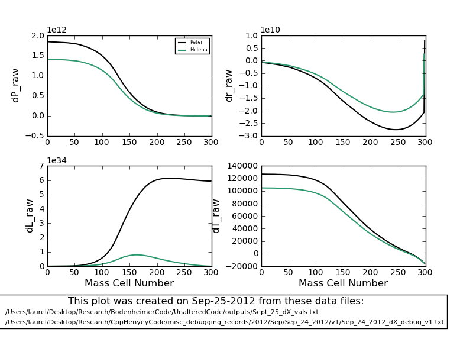
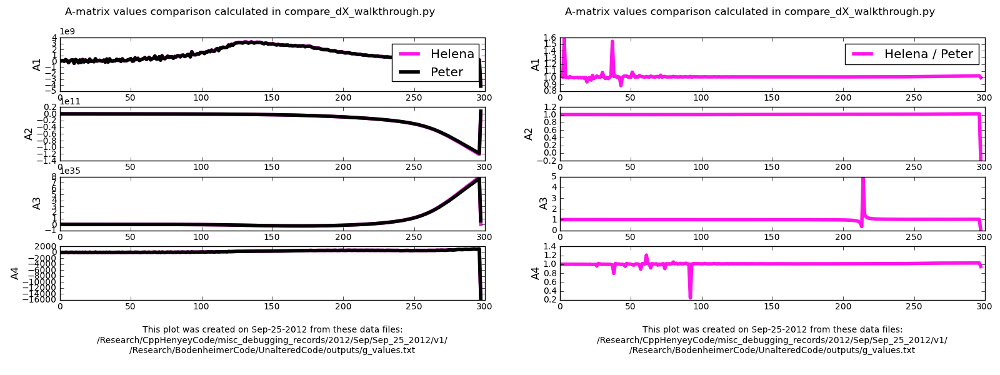

Date
& Time: Sept. 25, 2012
Location:
campus
Computing
context: MachoMac
(/Desktop/Research/CppHenyeyCode/src,
/Desktop/Research/BodenheimerCode/UnalteredCode)
From
last time:
Okay, I think I may
have figured out what's going on here. Next time, I need to update
my GnJ.cpp subroutines to use the outer boundary conditions given
in eqns. (5.47) through (5.50) in the Peter cookbook.
To
Do Today:
What happens if I
enforce matrix value "cleaning" in the dX walkthrough
program?
Also, see if Peter's
D43 value is set to zero due to those switches in his GI subroutine
code, or if the full calculations really yield D43 = 0.0 at the
outermost mass cell.

Figure
1
I
think I've figured out why the Helena and Peter dX profiles have
been mismatched. The file I was using for the Peter dX values
(/Users/laurel/Desktop/Research/BodenheimerCode/UnalteredCode/outputs/n32_1Msun_corrections_v4.txt)
was, I think, generated before I disabled the switch in Peter's code
that automatically sets the outermost CDE values to 1 or 0, rather
than calculating the full derivatives. This leads to very different
D matrix values at the outermost mass cell, which causes the dX
profiles to behave very differently (by several orders of
magnitude!) Figure 1, above, shows how much better the Helena and
Peter dX profiles now match, although 1) it's still not perfect,
esp. in the dL profile, and 2) I still need to go through and check
this with the new CDE Peter values.
To Do, now:
Move the old
CDEG value text files (from Peter's code) into different names
Get Peter's
code to print out the CDEG values it's generating from this same
run
Run these new
CDEG values through compare_dX_walkthrough.py to see how Peter's
code is now behaving.

Figure
2:
A
comparison of the A-matrix value profiles between Helena and the
new and corrected Peter-generated A-matrix values. Both are for a
1Msun, n=3/2 polytrope, no-fusion initial model, for a single
fitting iteration.
The
plot on the left shows the raw A-matrix profiles from the two
codes.
The
plot on the right shows the ratio of the values from the two
codes, to give a clearer picture of how well the results do or
don't agree.
Figure out why the
luminosity profiles are still so different.
Start by comparing
the A-matrix profiles (See Figure 2, above.)
It looks like the A
values still disagree a bit at the outermost mass cell, but I
don't think this is what's driving the difference in the
luminosity profiles.
However, Figure 3
suggests otherwise. (See below.) If you change the outermost
Helena A-matrix values to the Peter values, that causes the dL
profiles to come into near perfect agreement (middle plot of
Figure 3).
Start here
tomorrow, picking up with this outer-most A value investigation.

Figure
3
Top
panel plots the raw dL profiles generated by Peter and Helena.
Middle
panel plots the raw Peter dL profile, and the Helena dL profile
generated when you set the outermost A-matrix values to their
Peter-generated counterparts.
Bottom
panel plots the raw Helena dL profile, and the Peter dL profile you
get when you set the outermost A-matrix values to the Helena values.
To
keep in mind for later:
Were
the Peter values I've been using in my debugging generated from the
NO fusion version of the fortran code??? Definitely need to check
this.
For
the 1 Mjup model: do the Peter and Helena models' dX values (raw)
now agree, too?